Chasing the Clouds: My First Motor Ride to Malico, Pangasinan
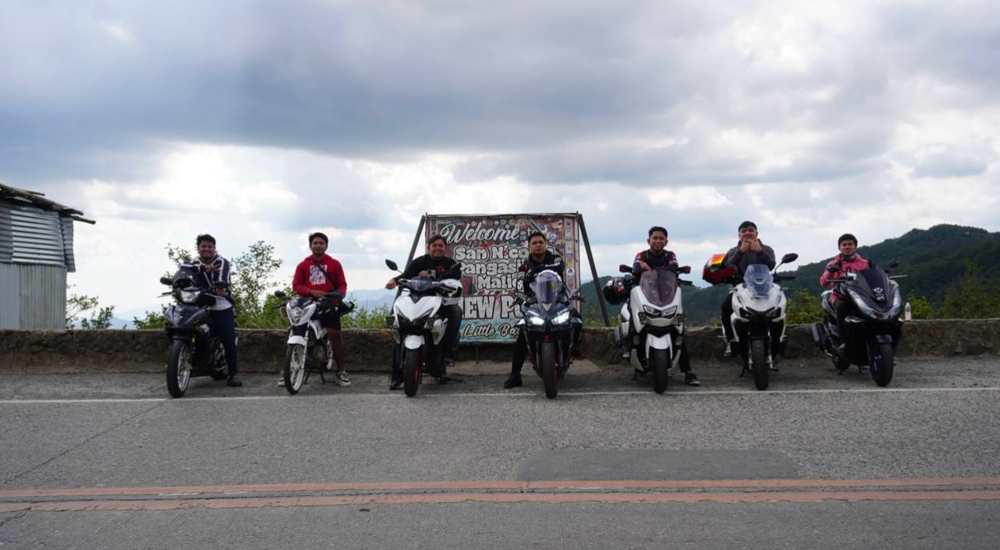
My first motor ride to Malico, Pangasinan was a journey I will never forget. The road was long, cold, and surrounded by fog, but it made the experience more exciting. Every twist and turn revealed pine trees and mountain views that felt unreal. The sound of my motor mixed with the silence of nature was calming. I felt nervous at first, but confidence slowly took over. The cool breeze kept me awake and alive the whole ride. Reaching Malico felt like a personal achievement. This trip made me fall in love with motor adventures even more.
.
A Taste of Two Cultures: Thai Vibes and Vietnamese Coffee
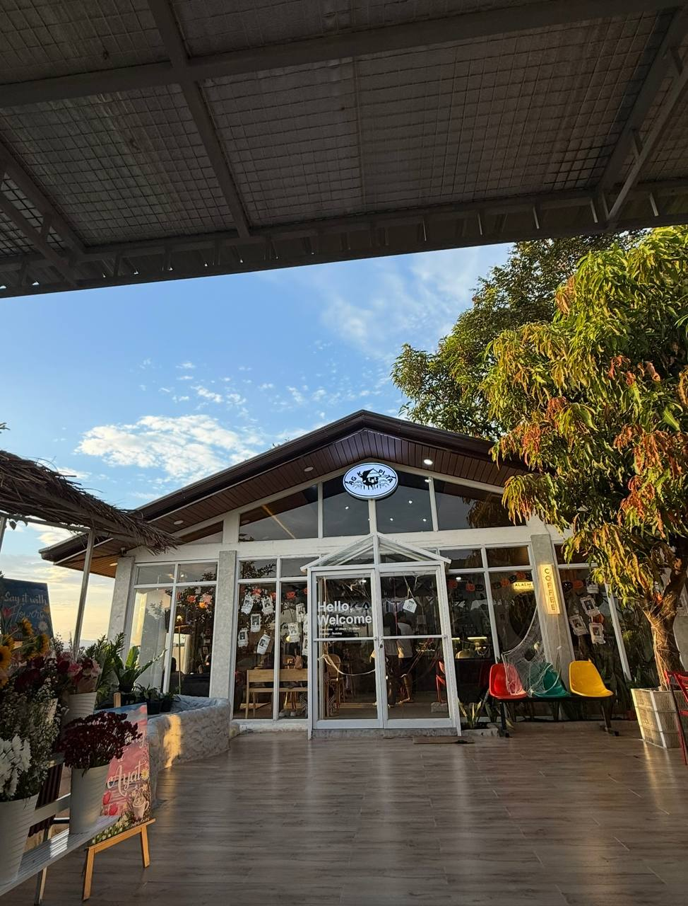
This café instantly stood out because of its Thailand-inspired design. The decorations were simple yet artistic, creating a relaxing atmosphere. What made it more interesting was their Vietnamese-inspired coffee flavors. Each cup tasted strong, rich, and full of character. Sitting inside felt like traveling without leaving the place. The calm ambiance made me enjoy every sip even more. It was the perfect spot to unwind and slow down. This café became a memorable stop on my journey.
Whispers of the Past: My First Visit to the Diplomat Hotel
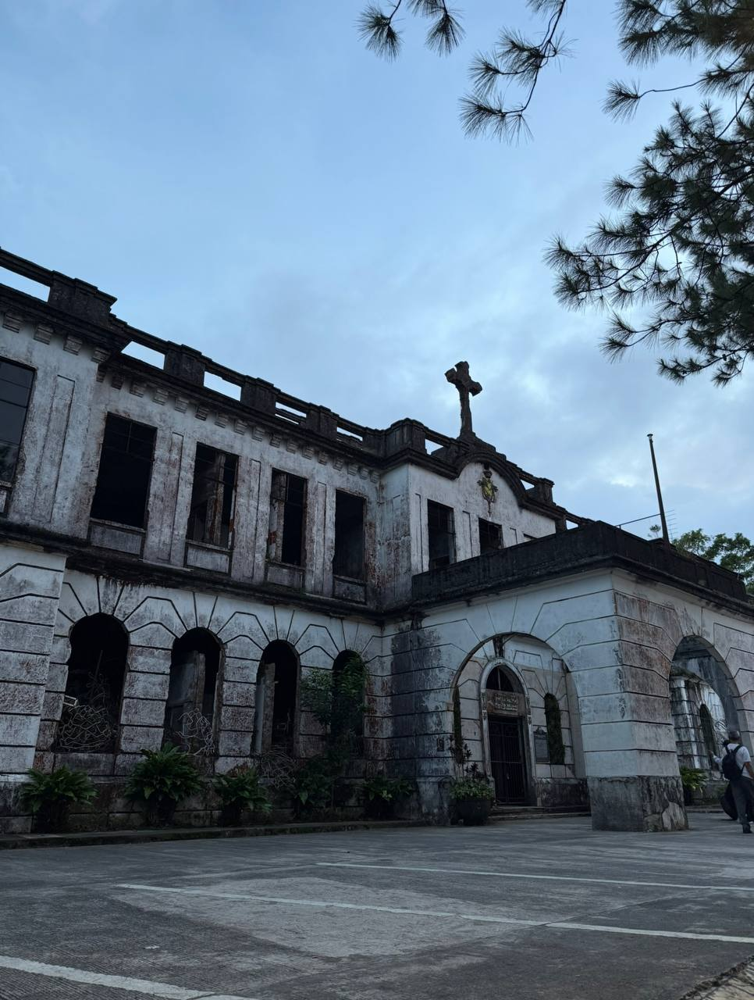
My first visit to the Diplomat Hotel felt mysterious and thrilling. The old structure carried a strong sense of history. Walking through the halls gave me chills and curiosity at the same time. The silence made everything feel more intense. Despite its eerie reputation, the place was strangely beautiful. The view surrounding the hotel was breathtaking. It felt like stepping into another era. This visit left me with memories I will never forget.
Where the City Meets the Sky: My Favorite View in SM Baguio
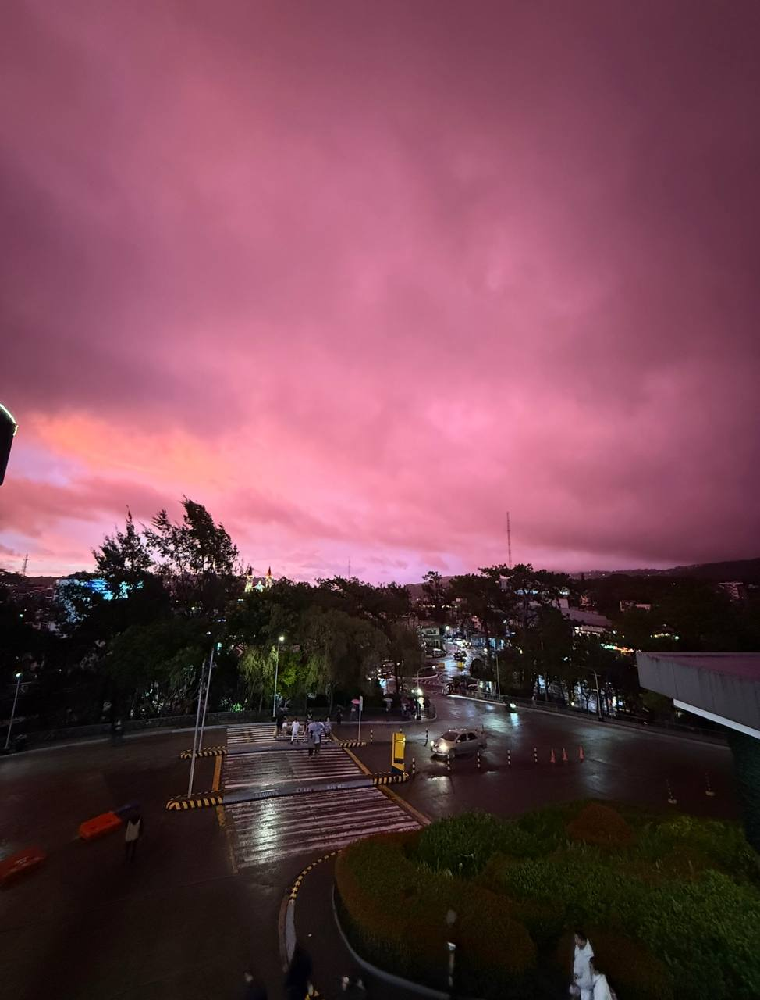
SM Baguio offers one of the most refreshing views I’ve ever seen. The open design lets you feel the cold mountain air. Looking at the city from above feels peaceful and calming. The fog slowly passing by adds to the charm. It’s a perfect place to pause and breathe. The view feels different every time I visit. Watching people while enjoying the scenery is relaxing. This spot will always be one of my favorites in Baguio.
Slow Days and Warm Cups: Discovering A Slow Life Café
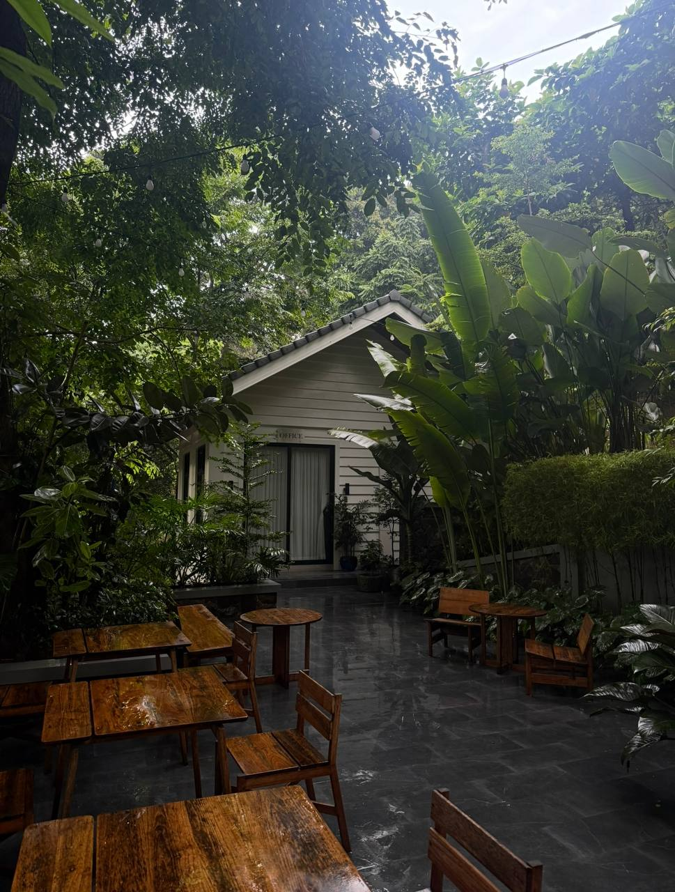
A Slow Life Café is a hidden gem along Marcos Highway. The peaceful environment instantly relaxes your mind. The café’s design is simple but very calming. Sitting there makes time feel slower. Their coffee tastes better because of the quiet surroundings. It’s a perfect escape from the noise of daily life. Every visit feels personal and comforting. This café truly lives up to its name.
Nature’s Playground: Exploring Agoo Eco Park

Agoo Eco Park is one of the best eco parks in Region 1. The wide open space is full of greenery and fresh air. Walking around feels refreshing and healthy. The park is clean and well-maintained. It’s a great place for family bonding and relaxation. You can really feel the connection to nature. The peaceful atmosphere helps clear the mind. This park shows the beauty of environmental care.
Golden Hour Magic: Sunset in San Juan, La Union
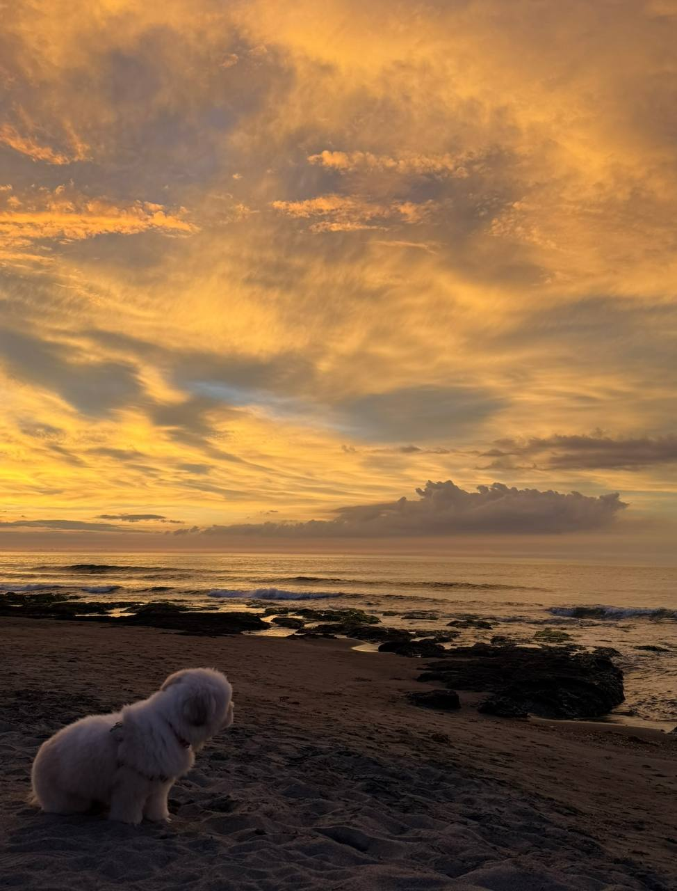
The sunset in San Juan, La Union is pure magic. The sky slowly turns orange, pink, and gold. Watching the sun sink into the ocean feels emotional. The sound of waves adds peace to the moment. Everything feels calm and complete. It’s a perfect time to reflect on life. The moment feels short but meaningful. This sunset will always stay in my memory..
Brotherhood by the Sea: Our All-Boys La Union Trip
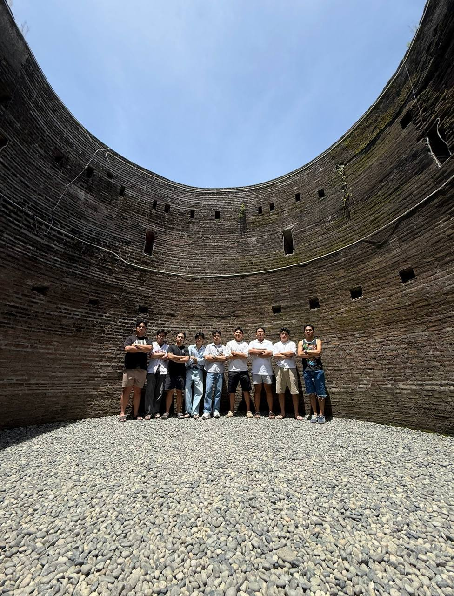
Our all-boys trip to La Union was full of laughter and chaos. We shared jokes from morning until night. The beach became our playground. Every moment felt carefree and fun. We bonded through food, stories, and adventures. The trip strengthened our friendship even more. It was a break from responsibilities. This trip reminded me how valuable true friends are.
Coffee and Cold Air: One of Baguio’s Best Cafés
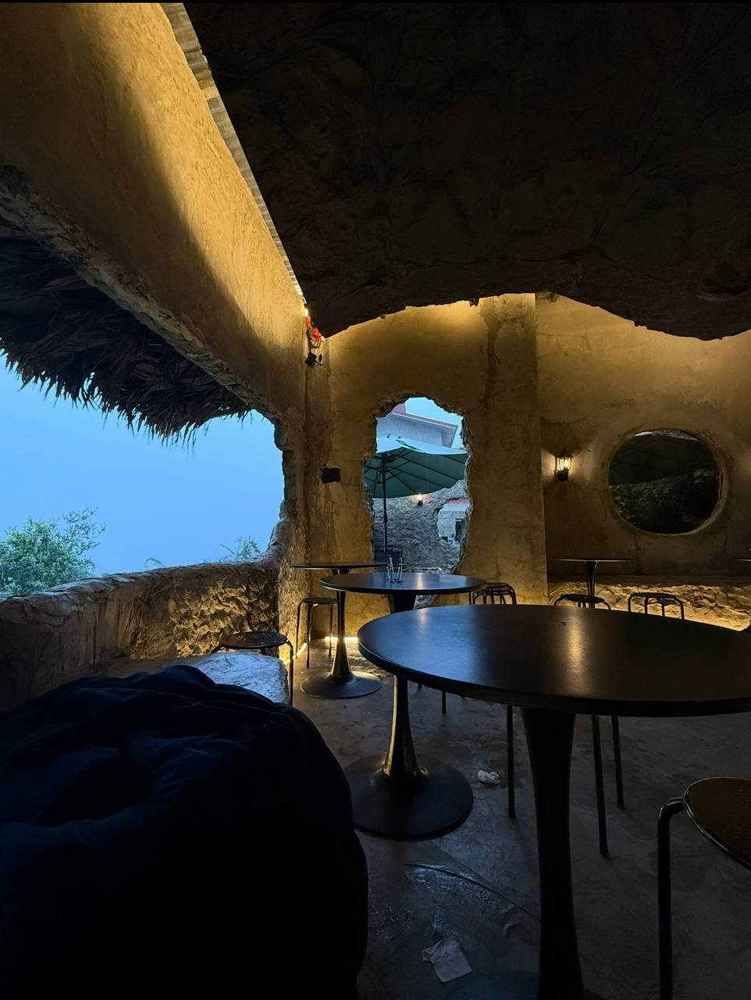
This coffee shop perfectly matched Baguio’s cold weather. The warm coffee felt comforting in every sip. The cozy interior made it even better. It was a perfect place to rest after walking around the city. The smell of coffee filled the air. The calm environment made me stay longer. It felt like home in a cup. This café truly captured the Baguio experience.
Above the Hills: Coffee Moments at Stella Café, Itogon

Stella Café in Itogon offers a peaceful escape. The view from the café is breathtaking. The fresh mountain air feels refreshing. Drinking coffee while enjoying the scenery feels perfect. The place is quiet and relaxing. It’s ideal for reflection and rest. Every moment there feels calm. This café quickly became one of my favorites.
.
City Lights from Above: The Best NCR View at Amiya Raya
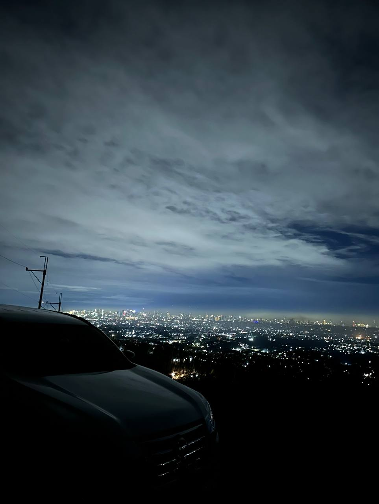
Amiya Raya in Rizal offers an incredible view of NCR. The city lights shine beautifully at night. The view feels magical and peaceful. It’s amazing to see how small everything looks from above. The cool air adds to the experience. It’s a perfect place for quiet moments. The scenery feels romantic and calming. This view is truly unforgettable.
Highlands Therapy: Finding Peace in Tanay
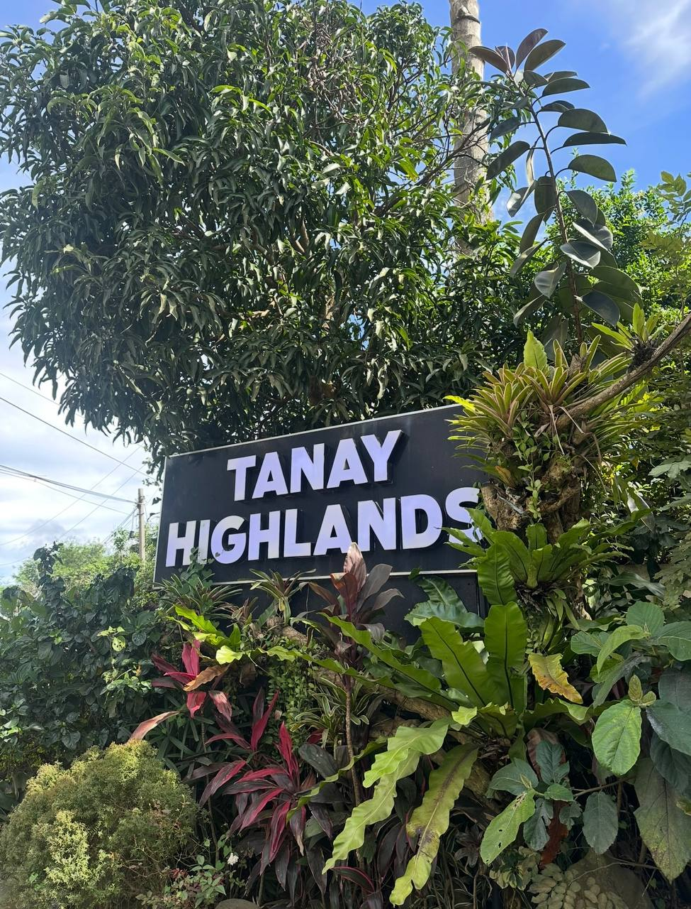
The Tanay Highlands showcase nature’s beauty. The wide landscapes feel refreshing. The breeze makes everything feel lighter. It’s a perfect place to escape stress. The view encourages deep thinking. Every visit feels healing. Nature speaks loudly here. Tanay always brings peace to my soul.
Chasing Water and Wonder: My Bolinao Falls Adventure
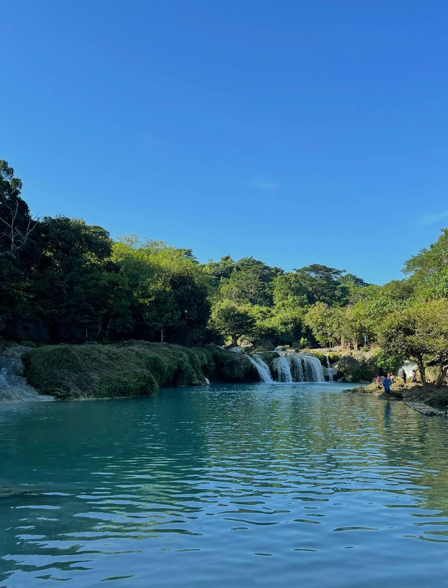
My trip to Bolinao Falls was refreshing and unforgettable. The sound of rushing water welcomed us as we arrived. The clear, cold water instantly washed away my stress. Surrounded by nature, everything felt calm and alive. Swimming beneath the falls felt exciting and peaceful at the same time. The lush greenery made the place even more beautiful. It was a perfect escape from the busy routine of life. This adventure reminded me how healing nature can be.
New Wheels, New Freedom: My First Ride on My Own Motor
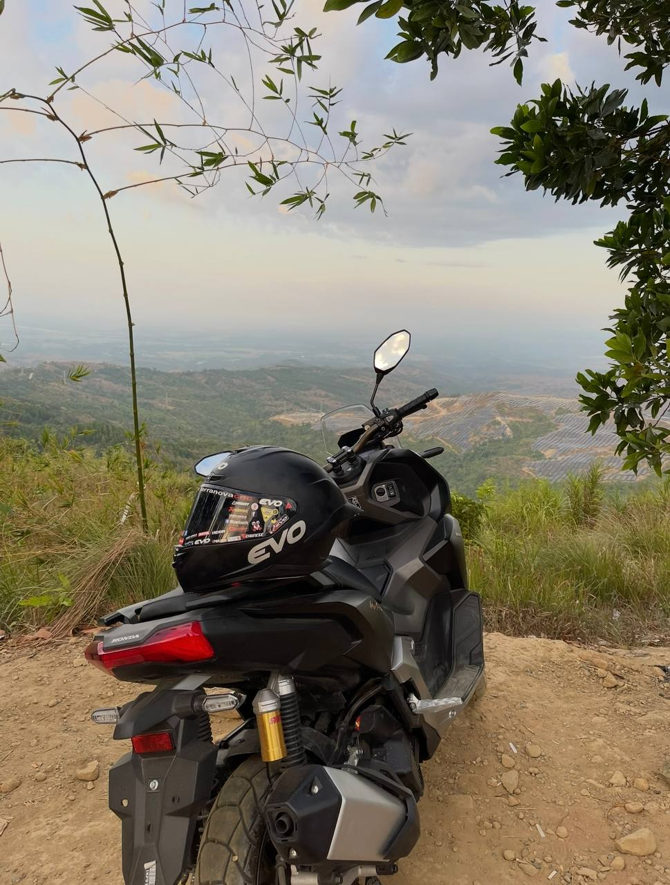
My first ride with my new motor was unforgettable. I felt excited and nervous at the same time. The road felt different knowing it was my own. Every mile boosted my confidence. The ride symbolized independence. It felt like a personal milestone. I enjoyed every second of it. This moment marked a new chapter in my life.
Painting the Sky: Sunset Moments at Mana Café

The sunset at Mana Café was breathtaking. The sky slowly changed colors. The view felt warm and calming. Sitting there made me forget my worries. The atmosphere was peaceful. It was the perfect end to the day. The moment felt intimate and quiet. This sunset remains one of my favorites.
Quiet Views and Calm Brews: Moch Café Experience
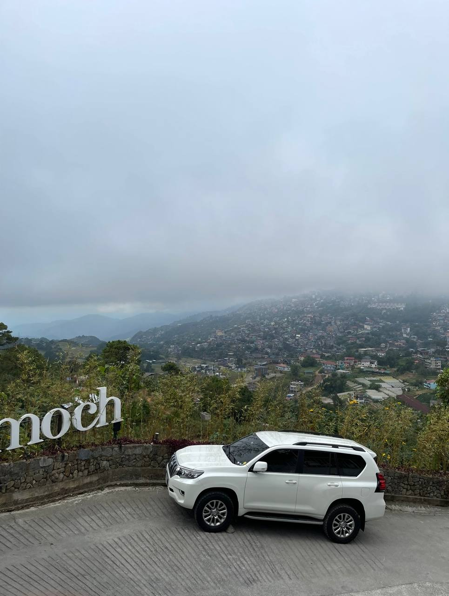
Moch Café offered a simple yet beautiful view. The surroundings felt calm and peaceful. It was a great place to enjoy silence. The coffee complemented the scenery well. Every sip felt relaxing. The environment encouraged reflection. Time seemed to slow down. This café felt like a safe space.
Road Trips and Family Laughs: Our Ilocos Journey
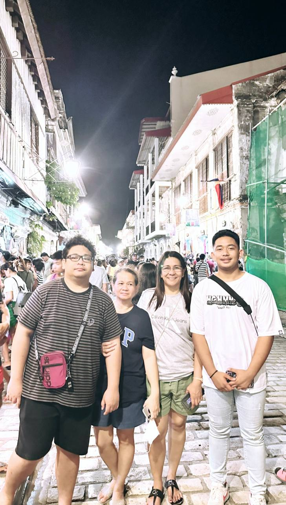
Our Ilocos trip with my cousin, mother, and tita was heartwarming. The long drive was full of conversations. We explored different places together. Every stop created new memories. The laughter made the trip special. It strengthened our family bond. The experience felt complete. This trip will always be remembered.
Golden Roads: My First Sunset Ride in Lingayen
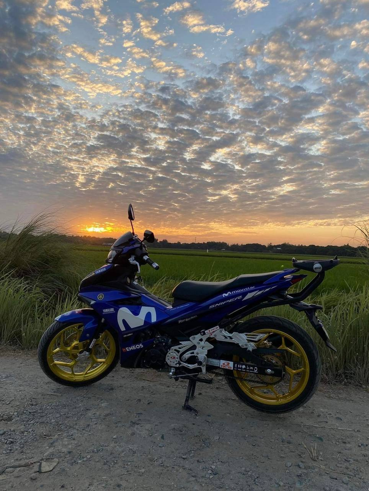
Riding my motor in Lingayen during sunset felt magical. The sky glowed beautifully. The road felt peaceful and calm. The breeze was gentle and relaxing. It felt like freedom. The moment was emotional. Everything felt perfectly timed. This ride became a core memory.
A Place of Peace: Visiting St. Vincent in Bayambang
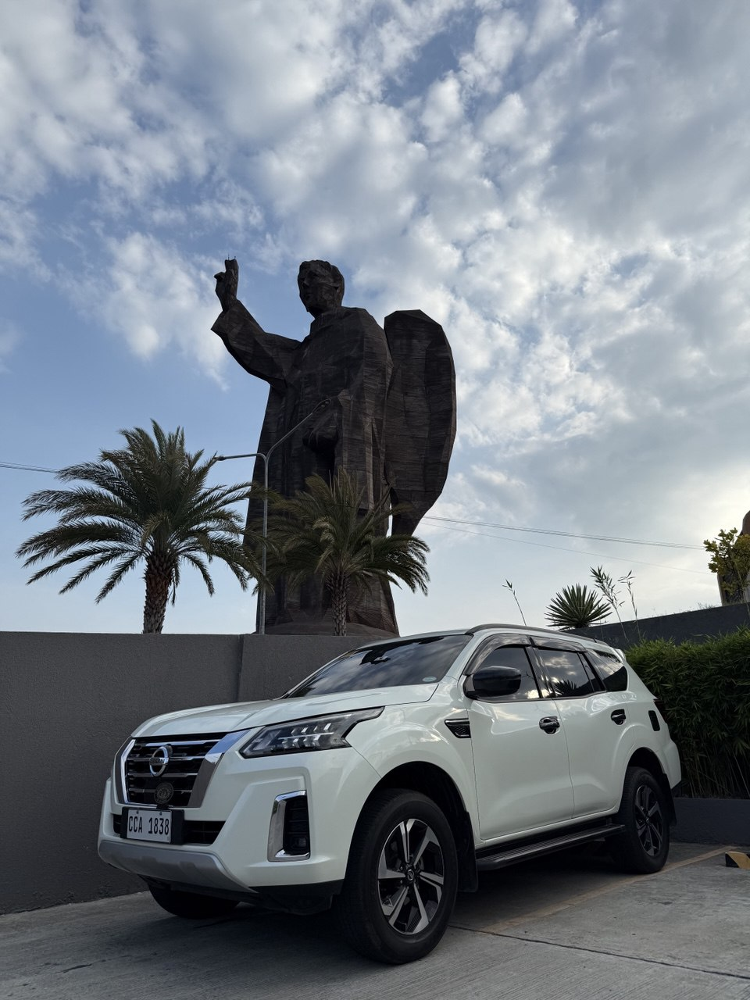
St. Vincent in Bayambang feels peaceful and calm. The atmosphere is quiet and soothing. It’s a perfect place for reflection. Being there felt comforting. The surroundings inspire gratitude. It helped clear my mind. The visit felt meaningful. This place holds a special feeling.
First Journeys and Forever Memories: Zambales Trip
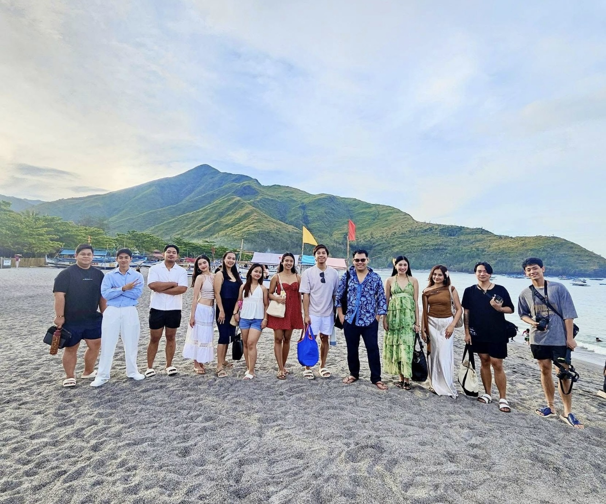
This trip marked my first travel with such amazing people by my side. Sharing the journey with our very kind and respected professor made it even more special. Villa Sorrento in Zambales welcomed us with peaceful waves and fresh sea air. The beach instantly became a place of laughter and connection. Every moment felt light, genuine, and full of joy. We shared stories, meals, and endless smiles by the shore. Being guided by our professor made the experience meaningful and inspiring. This trip will always remind me how beautiful traveling is when shared with the right people.
Stronger Together: My Gym Buddies
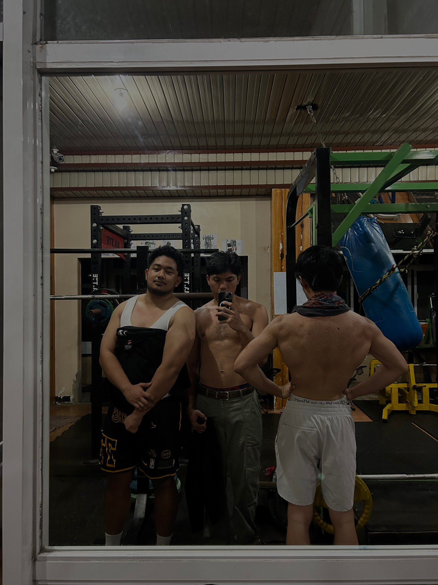
My gym buddies played a big role in inspiring me to be physically fit. Seeing their discipline motivated me to show up every day. Their consistency reminded me that progress takes time. We pushed each other to go beyond our limits. Every workout felt easier because I wasn’t alone. Their dedication turned exercise into a habit. The gym became a place of growth and support. Because of them, fitness became a lifestyle, not just a goal.
Sun, Sand, and Friendship: First College Beach Trip
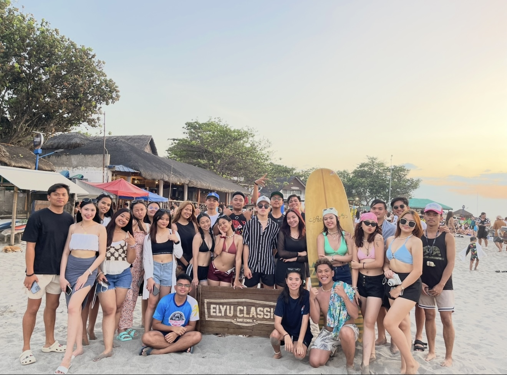
My first beach trip with college friends was unforgettable. We enjoyed the sun and the sea. Laughter filled the entire trip. We shared stories and dreams. The bond between us grew stronger. It felt like true freedom. The experience defined college life. These memories will last forever.
Home Away from Home: Pampanga Escape
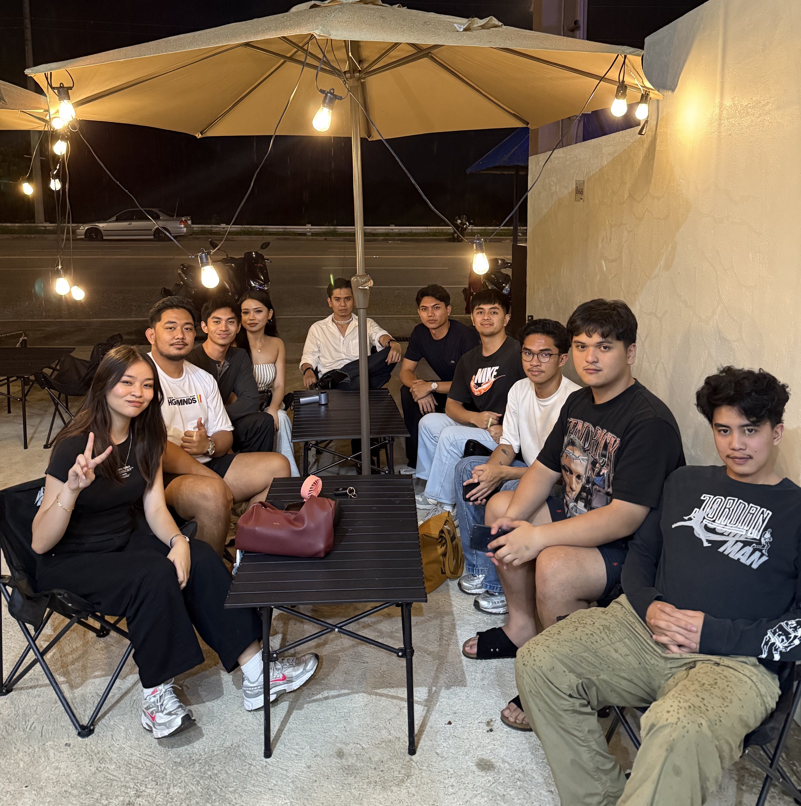
Our Pampanga trip was a much-needed escape to unwind and breathe. Traveling with friends I treat as family made every moment special. The food, the laughter, and the late-night talks felt comforting. We explored places without rushing, just enjoying each other’s company. Every stop became a memory worth keeping. The trip reminded me how important genuine connections are. Pampanga gave us rest, but my friends gave me peace. This journey proved that family is not always by blood, but by heart.
White Sand Memories: A Family Escape to Boracay

Our family trip to Boracay was unforgettable. The white sand and clear water amazed us. We spent time swimming and relaxing together. Laughter filled every moment of the trip. It was a break from our busy lives. Sharing meals by the beach felt special. The trip strengthened our family bond. These memories will always stay with me.
Another Year, More Smiles: Birthday with Friends
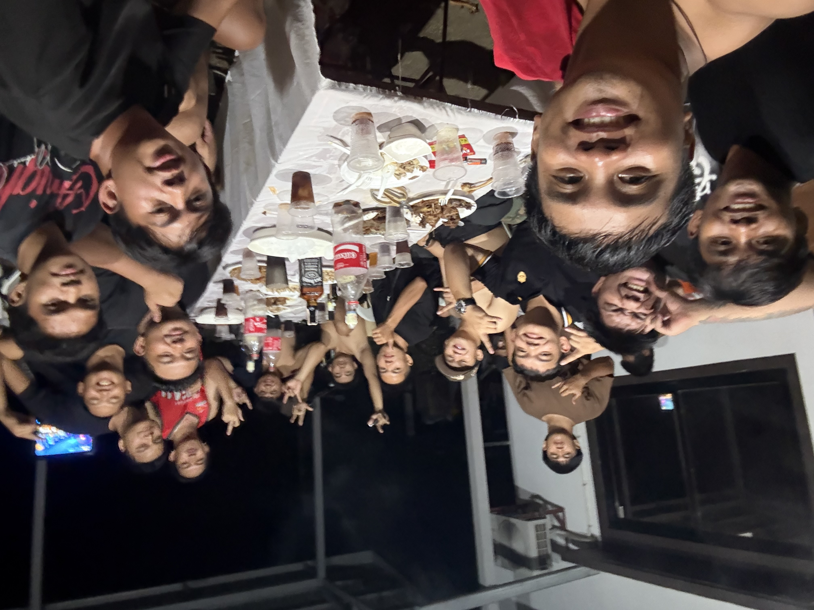
Celebrating my birthday with friends made me grateful. Their presence meant everything to me. We shared laughter and surprises. The celebration was simple but meaningful. It reminded me how blessed I am. Being surrounded by good people felt special. The day was full of joy. This birthday will always be remembered.
Cold Nights and Christmas Lights: Camp John Hay

Our Christmas party at Camp John Hay was magical. The cold weather added to the holiday vibe. Lights surrounded the area beautifully. We shared food and laughter. The atmosphere felt warm despite the cold. The night was full of memories. It truly felt like Christmas. This celebration was unforgettable.
Learning Beyond the Classroom: First College Field Trip
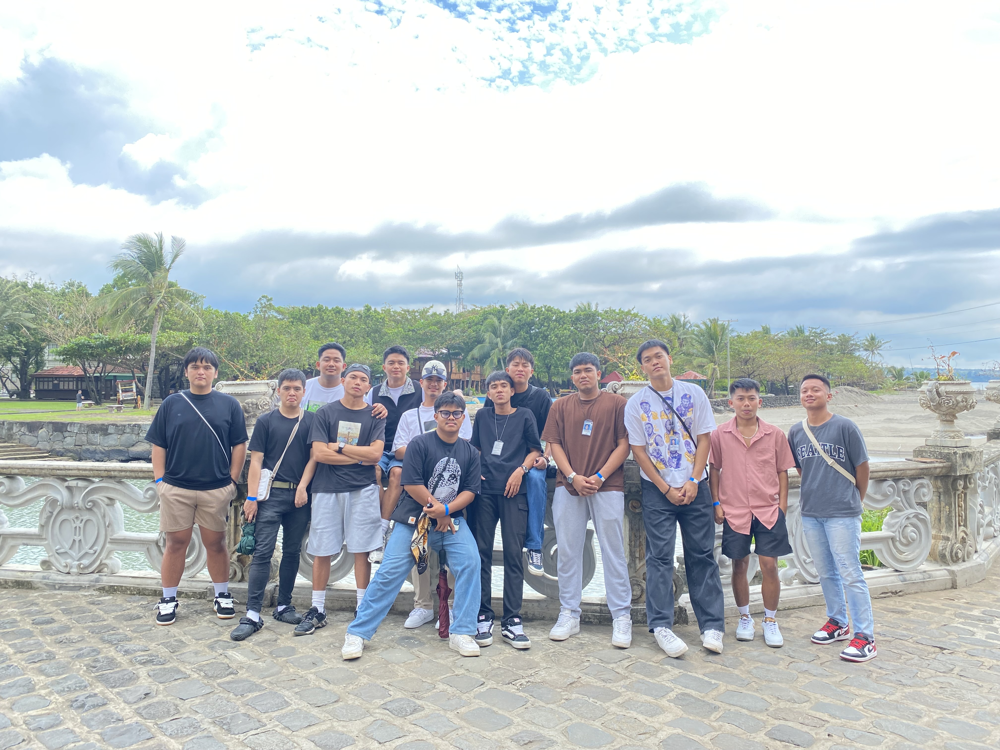
My first college field trip to Subic and Clark was exciting. Staying at a Hilton Hotel felt unreal. We learned while enjoying the experience. The trip balanced fun and education. Exploring new places felt refreshing. It strengthened friendships with classmates. The memories were priceless. This trip became a college highlight.
Little Hearts I Protect
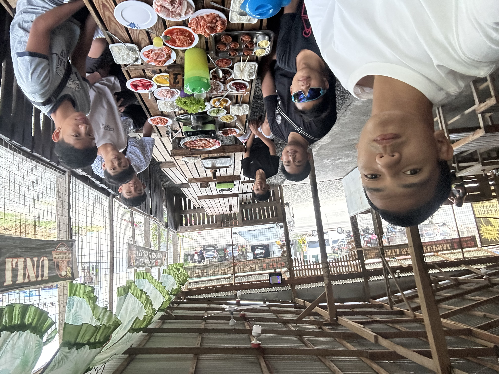
These kids hold a special place in my heart. I treat them as my own sons. Their happiness means everything to me. I feel responsible for guiding them. Watching them grow brings joy. They inspire me to be better. Our bond is genuine. They are family to me.
Journeys That Shaped Us: Cebu–Bohol Field Trip
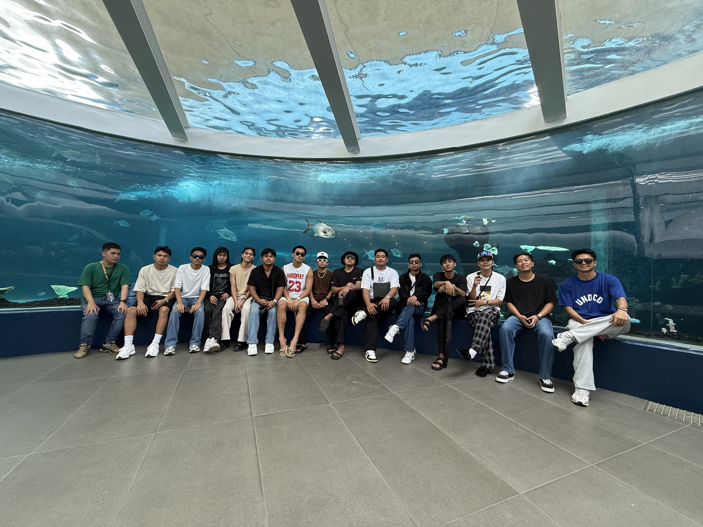
My second college field trip to Cebu and Bohol was unforgettable. The islands were stunning and vibrant. We learned through experience and travel. The beaches were breathtaking. Traveling with classmates made it more fun. The trip felt balanced and exciting. Every place taught us something new. This journey became one of my favorites.
Where Laughter Met the Falls: Antong Falls Adventure
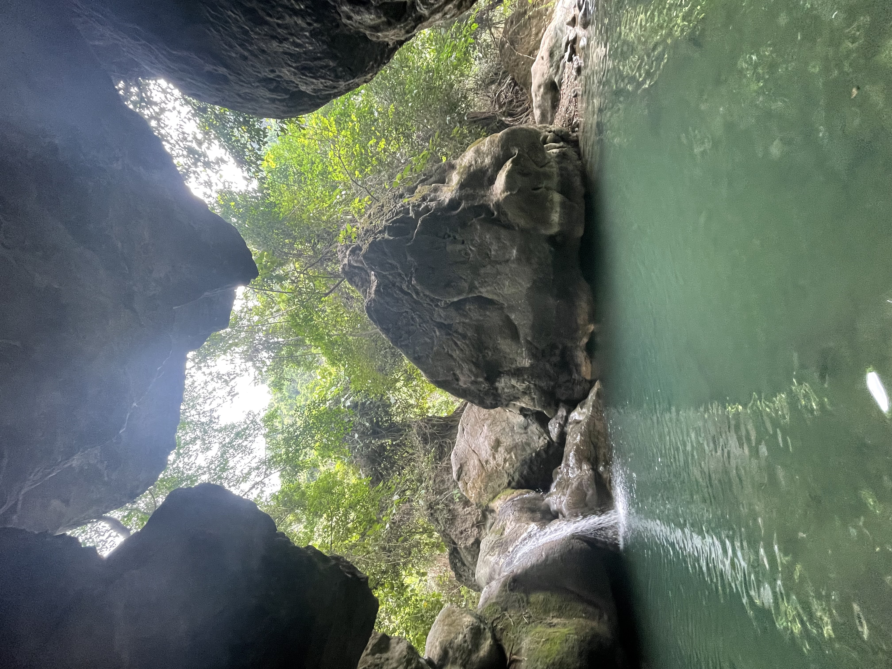
Our trip to Antong Falls in Sison, Pangasinan was full of excitement and fun. Traveling with my friends made the journey even more meaningful. The sound of the water instantly relaxed us. The cold water refreshed both body and mind. We laughed, swam, and enjoyed every moment together. Nature surrounded us with peace and beauty. The trip helped us forget stress and worries. This adventure became another unforgettable memory with my friends.